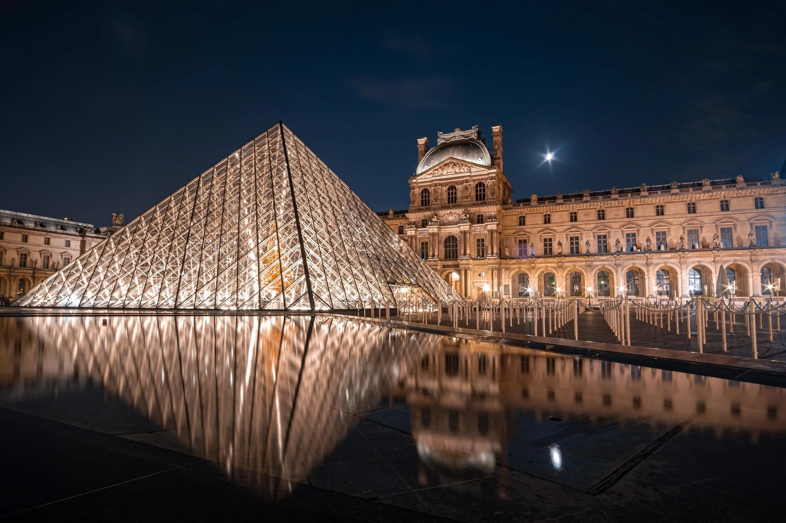

Se trata de una joya arquitectónica y una obra de arte de hermosos y frondosos jardines, decretada por la Unesco como Patrimonio de la Humanidad. Es además un símbolo de la historia de la nación.
El horario de visita a los jardines y al palacio es diferente. Este último está abierto a los turistas de martes a domingo de 9:00 am a las 6:30 pm. Los jardines, de 8:00 am a las 8:30 pm, todos los días, pero de noviembre a marzo, hasta las 6 pm.
El costo de la entrada es de 21 USD en los adultos turistas, mientras que los menores de 18 años y ciudadanos de la comunidad europea de entre 18 y 25 años, no pagan.
La Catedral de Notre Dame es uno de los más importantes patrimonios de la arquitectura gótica del mundo. Fue dedicada a la Virgen María en su construcción que tuvo origen entre 1163 y 1245.
Las visitas a la catedral están suspendidas temporalmente tras el trágico incendio de la estructura sur, tejado y de la aguja principal de la edificación, consecuencia de un accidente en las obras de remodelación del lugar.
Antes de esto los turistas disfrutaban de una gratuita visita guiada en español y en inglés. El recorrido por las torres costaba 10 USD en adultos, mientras que los menores de 18 años y ciudadanos europeos de entre 18 y 25 años, entraban gratis.

Inaugurado durante el siglo XVIII, el Museo del Louvre es uno de los más relevantes de Francia y del mundo entero, lugar de un importante puñado de obras de los artistas más influyentes de la historia y de colecciones de arte de la monarquía francesa.
El horario de visitas al Museo del Louvre es lunes, jueves, sábado y domingo, de 9:00 am a 6:00 pm. Los miércoles y viernes de 9:00 am a 9:45 pm.
El precio de la entrada es de 19 USD en adultos, mientras que los menores de 18 años y los miembros de la comunidad europea de entre 18 y 25 años, no pagan. Por 23 dólares, no haces cola.
Está en las instalaciones de una antigua estación de tren que funcionó hasta 1939, aunque no fue hasta 1977 cuando comenzó a planearse la construcción del museo, que finalmente abriría en 1986.
Visítalo entre martes y domingo de 9:30 am a 6:00 pm. El horario se extiende los jueves hasta las 9:45 pm. Los lunes está cerrado.
El precio de la entrada para adultos es 16 USD. Los menores de 18 años, miembros de la comunidad europea de entre 18 y 25 años y las personas con impedimentos físicos y su acompañante, pasan gratis.
Ubicado entre el Palacio del Louvre y la Plaza de la Concordia, se trata del primer jardín público de la ciudad. Su construcción comenzó en 1945 en compañía del palacio que le antecedente y por órdenes de Catalina de Medicis.
El nombre del palacio y de los jardines se debe a las fábricas de tuilles o tejas, que antes tenían lugar en ese espacio.
Ahora los jardines funcionan como un espacio libre para el acceso de los citadinos, como una suerte de parque donde las personas pueden relajarse, hacer comidas y descansar.
.webp)
.jpg)
.webp)
.jpg)